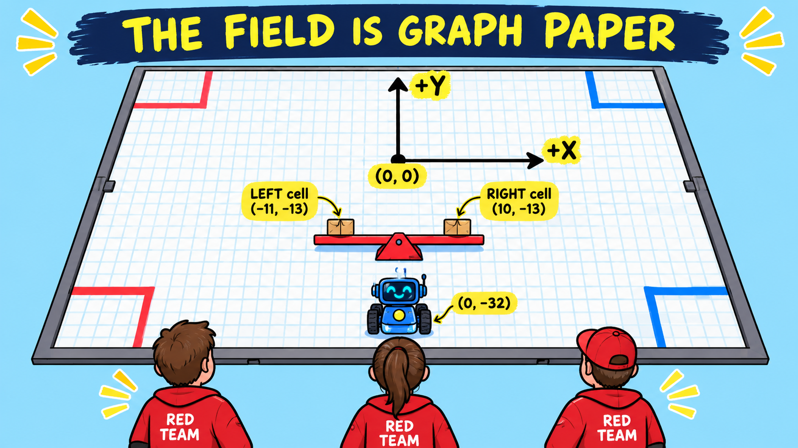
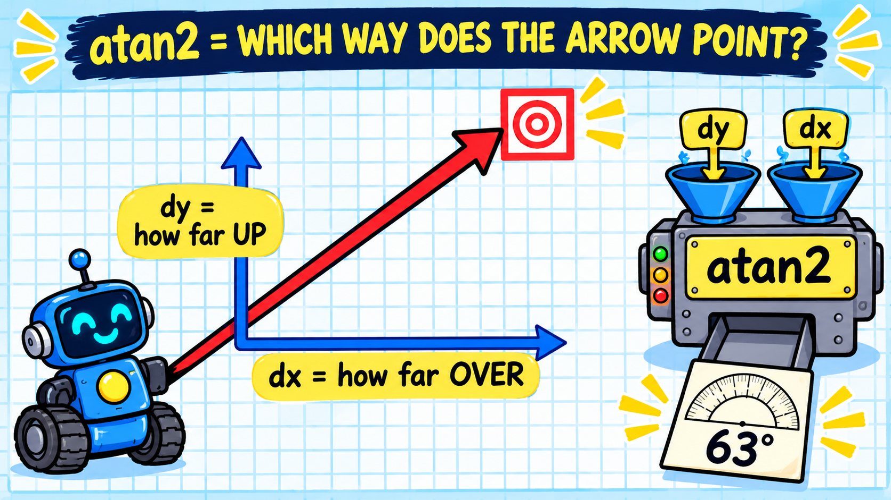
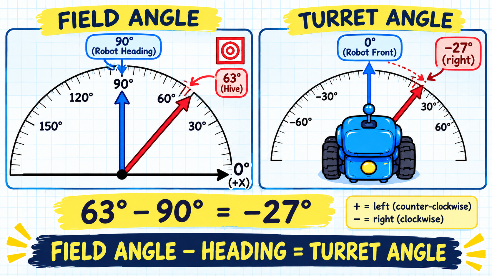
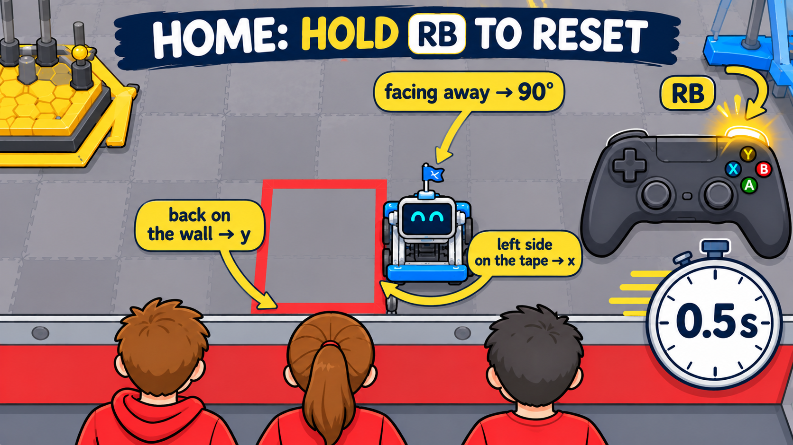

Auto-aim builds on the Turret lesson (The Turret: Gears, Servos and Aiming, just above this
one). You need its Turret.java and the turret line in Robot.java, plus the Pinpoint
Localization from the Advanced lessons, so the robot knows where it is. Haven't done the Turret lesson
yet? Go back and do that one first.
Ever used a compass in Minecraft? Run anywhere, spin around, jump off a cliff — the needle keeps pointing at your spawn point. Lots of games have the same thing: a waypoint arrow that always points at the next objective, no matter which way you turn. By the end of this lesson your turret will be that arrow: the robot drives, spins and wiggles all over the field, and the shooter stays pointed at the hive. Nobody has to aim. The driver drives; the robot aims.
Here's the surprising part: the compass doesn't see your spawn point. The game simply knows where you are and where spawn is, and works out the direction between them. Our robot can't see the hive either (there's no camera in this lesson), but it knows the same two things:
Turning those two facts into a turret angle takes a little math. Not all of trigonometry — just three ideas, one at a time.
This lesson ends with a reward: a complete AutoAim class, an upgraded
Turret that can point anywhere, a new setPose() method for
Localization, and the TeleOp lines that put it all together. It unlocks when you pass the
quiz at the bottom — and for this lesson that means a perfect score, 10 out of 10.
This is advanced code that your robot will really run, so every piece matters. Most people need a few tries;
read each explanation you miss, and you'll get there.
A compass only works if everyone agrees where things are. So we lay a sheet of graph paper over the field, seen from where the red drivers stand:
(0, 0) is the center of the field.
(0, 0), +X is right, +Y is away from the red drivers.The red hive has two cells. On our graph paper they're at:
(−11.4, −12.75)(10.2, −12.75)(These come from the simulator's field model. On a real field, measure them with a tape measure before you trust them.) Teams usually shoot from along the left or right wall, and the robot aims at the cell on its own side of the field: left side, left cell; right side, right cell.
Now imagine a giant protractor lying on the field. Every direction gets a number, and the rules are the same everywhere:
Why counter-clockwise? Mathematicians have measured angles that way for hundreds of years, so every math tool
(including Java's Math class) expects it.
In Minecraft you might tell a friend “the base is 10 blocks east and 20 blocks north of you.” Our robot does the same thing: to get from the robot to the cell, how far do you go over, and how far up?
dx = cell x − robot xdy = cell y − robot yAlways target minus robot: the arrow starts at the robot and ends at the cell. Do it backwards and the arrow points the wrong way!
We have “over” and “up”. We want a direction — an angle on the
protractor. Java has a machine for exactly that: Math.atan2(dy, dx). Think of it like a vending machine:
put in “how far up” and “how far over”, and out pops the direction. You don't
need to know how the gears inside work. (It answers in radians, so we wrap it in Math.toDegrees.)

atan2(dy, dx) turns that into the
arrow's direction.Why atan2 and not the tan⁻¹ button on a calculator? The calculator only looks at one number
(dy ÷ dx), so it can't tell “up and right” from “down and left”. The “2” in
atan2 means it looks at both numbers and their signs, so it always knows which way the arrow really
points. Its answer is always between −180° and +180°.
atan2 tells us the direction on the field. But the turret doesn't measure from the field's +X. It measures from the robot's front. That's like the difference between “the hive is to the northeast” and “the hive is a little to your right.” To turn one into the other, you need to know which way the robot is facing: its heading.
turret angle = field angle − robot heading

Angles go around in a circle, like a clock. On a clock, 13 o'clock is the same as 1 o'clock. On our protractor, 340° and −20° point the same way — and turning 20° right is a lot quicker than turning 340° left. So if the subtraction lands outside −180°…180°, we wrap it:
Example 1: the robot is at the starting spot (0, −32.4), facing away from the
drivers (heading 90°). It's aiming at the right cell (10.2, −12.75).
| Step | Math | Answer |
|---|---|---|
| How far over? | dx = 10.2 − 0 | 10.2 |
| How far up? | dy = −12.75 − (−32.4) | 19.65 |
| Which way? (atan2) | atan2(19.65, 10.2) | 63° |
| Turret angle | 63 − 90 | −27° (27° to the right) |
Sanity check: the arrow goes up more than it goes over, so it should be steeper than 45°. 63° fits. And the cell is a bit to the right of where the robot is facing, so the turret turning a bit right makes sense.
Example 2: the robot is along the right wall at (56, 20), facing the middle of the
field (heading 180°). It's on the right side, so it aims at the right cell.
| Step | Math | Answer |
|---|---|---|
| How far over? | dx = 10.2 − 56 | −45.8 (to the left) |
| How far up? | dy = −12.75 − 20 | −32.75 (toward the drivers) |
| Which way? (atan2) | atan2(−32.75, −45.8) | −144° |
| Turret angle | −144 − 180 | −324° … outside the range! |
| Wrap it | −324 + 360 | +36° (36° to the left) |
Sanity check: the robot faces left across the field. The cell is ahead of it and a bit toward the drivers, which, from the robot's point of view, is to its left. +36° is left. ✔
Now you do the robot's math. Each round puts the robot somewhere new, usually along a side wall, where teams really shoot from. Work through the steps, then hit FIRE: the turret aims with your answer. Get it right and it's a hit. Get it wrong and you'll see exactly where your shot went.
Cell positions are rounded to whole inches here, so the arithmetic comes out even. Build a streak and climb from 🥚 Larva to 👑 Queen Bee!
That took you a minute or so per shot. Here's the cool part: the robot does the exact same steps — dx, dy, atan2, subtract the heading, wrap — every single time through the run loop. That's about 50 times every second.
Think about what that means. Every 20 milliseconds the Pinpoint reports a fresh position and heading, the math runs, and the turret gets a fresh angle. The driver can race along the wall, spin the robot around, get bumped by another robot — and 50 times a second, the turret quietly corrects itself. It never looks away from the hive. That's exactly how the compass in a game works: every frame, the game re-does the math, so the needle always points home. 🧭
A small piece of math, run over and over in the loop, turns into a behavior: “always point at the hive.” You never write “follow the hive” anywhere in the code. It happens because the answer is recalculated faster than the robot can move.
Here's that loop running. When nobody's touching it, the robot drives itself around on autopilot. But it's interactive: grab the robot and drag it anywhere on the field, or slide its heading, and you're in control. Let go for a few seconds and autopilot takes over again. Watch the box: the field angle, minus the heading, gives the turret angle, recalculated every time anything moves. The orange turret never leaves the dashed line to the cell.
The math is the heart of it. But a real robot on a real field needs a few more details before it works. Each one is a small idea of its own.
The robot aims at the cell on the same side of the field as the robot. The line down the middle,
from the red drivers through the center of the hive, is x = 0:
The hive is a seesaw, so sometimes the cell on your side is tipped down. That's fine. The turret still points at it while you collect pollen, and the driver simply doesn't shoot. When the driver wants a shot, they drive to the side with the raised cell, and the turret swings over to it on its own. No buttons needed.
What if the robot sits right on the line? Odometry wobbles by a fraction of an inch, so x would flip between +0.1 and −0.1, and the turret would whip back and forth between the two cells. To stop that, there's a dead zone: a strip 6″ wide on each side of the line.
To switch, the robot has to come all the way out the other side of the strip. A home thermostat works the same way: it doesn't flip the heat on and off every time the temperature wiggles by a tenth of a degree.
The robot starts at x = 0, right in the dead zone, so auto-aim needs a first choice. It starts on the
right cell, because that's the one raised at the start of the match.
In lesson 17 we limited the turret to about ±128° to protect the wires. That leaves a blind spot behind the robot. But remember the math from lesson 17: through the overdrive and the turret gears, the servo's full signal gives about 407° of turret travel. That's more than a full circle, so the turret can point anywhere, even straight back over the robot.
Two changes unlock it, and they're both in the reward's new Turret.java:
servo.setPwmRange(new PwmControl.PwmRange(500, 2500)); Now DEGREES_PER_FULL_RANGE is
407.±200° means the cables to the shooter twist through 400°. Before auto-aim is allowed to swing that far on a real robot:
setAngle(180) and setAngle(-180), watching the wires, before
you let auto-aim drive it.Since the turret can go past 180°, some directions can be reached two ways. Pointing straight back-left could be +190° (turn left, a little past halfway) or −170° (turn right, almost halfway). Both point the same way. That overlap is the yellow band in the widget: the 40° slice straight behind the robot, 20° each side of dead-back.
When there are two ways to point at the cell, use the one that's the shorter swing from where the turret is now — as long as it stays within ±200°.
Why does this matter? Picture the cell slowly passing behind the robot. With only one way to point (−180° to 180°), the moment the answer crossed 180° it would jump to −180°, and the turret would whip all the way around even though the cell barely moved. With the two-ways rule, the turret simply keeps going a little past 180°. The 40° of overlap gives it room, so a cell wobbling behind the robot never makes it flip.
What if the driver keeps spinning the robot the same direction, around and around? The turret follows to 200°, and then there's only one way left. It has to unwind: swing all the way around to the other side and carry on from there. Like a phone cord that's twisted as far as it goes, the only fix is to untwist it. The turret is fast (about half a second for the full swing), so this costs a moment once in a while — never a missed direction.
Try the hardest rounds: the cell is behind the robot, so you'll have to pick which way around to send the turret. Pick the shorter swing!
Odometry is good, but not perfect. The wheels slip a little, the cell numbers might be off by an inch, and a shot can drift. So the driver gets a trim: push the right stick left or right to shift the aim a little.
This is different from lesson 17's D-pad nudge. The nudge moved the turret itself. But auto-aim sets the turret 50 times a second, so a nudge would be wiped out right away. Instead, the trim is an offset that auto-aim adds on top of its answer:
turret angle = field angle − heading + trim
Our robot doesn't have a hood, so the right stick's left/right is free for the trim. (If your code still has a hood line on the right stick from an older version of this course, delete it.) And since auto-aim moves the turret now, the D-pad is free.
A game's compass only works because the game always knows where you are. Our robot has to earn that. The Pinpoint
resets to (0, 0) facing 0° every time an OpMode starts — it has no idea where on the field it
is until somebody tells it. There are three ways that happens.
Autonomous knows exactly where the robot is the whole time: it's driving paths in field coordinates. So every loop,
it writes the robot's position on the blackboard, a place in the FTC software that survives from one
OpMode to the next. It's like leaving a note on the fridge: “I parked at (−48, 16), facing 90°.”
Right after START, TeleOp reads the note and calls setPose with it, and auto-aim works from the very first
second.
// in auto, every loop:
blackboard.put("autoPose", new double[] { p.getX(), p.getY(), Math.toDegrees(p.getHeading()) });
// in TeleOp, right after START:
Object fromAuto = blackboard.remove("autoPose");
if (fromAuto instanceof double[]) {
double[] p = (double[]) fromAuto;
robot.localization.setPose(p[0], p[1], p[2]);
}remove, which reads the note and throws it away. If you stop and restart TeleOp later in
practice, it won't trust an old note from a robot that may have been carried somewhere else.setPose. The Pinpoint spends a moment calibrating after INIT, and a
pose sent during that moment can get erased.If there's no note (you ran TeleOp by itself, or the robot was restarted), the robot doesn't know where it is. A guess would be worse than nothing: the turret would aim confidently at the wrong spot, and the driver might shoot. So auto-aim points the turret straight forward and the telemetry says “position unknown: park at HOME and hold RB.”
HOME is one spot right in front of the drivers, next to the loading zone, that the robot can be put in exactly, without measuring:

The position is the robot's center, so we add half the robot's size: with an 18″ × 18″ robot, HOME is at x = −22 + 9 = −13 and y = −71 + 9 = −62, facing 90°.
One button fixes both of the robot's “which way am I facing” answers at once:
At HOME both are true at the same moment, so one button can do both. The rule: only press RB at HOME. Press it anywhere else and the robot will believe it's at HOME when it isn't, and every shot will miss until you reset properly.
Why hold for half a second instead of a quick press? So a bumped button in the middle of a match
can't move the robot's idea of where it is. The code uses a stopwatch (ElapsedTime) that restarts every
time RB is up; only when it reaches 0.5 seconds does the reset happen.
HOME is also the fix for drift. Odometry is very good, but after two minutes of bumping into robots it can be off by an inch or two. Since the robot parks near the drivers anyway, a quick hold of RB at HOME wipes the slate clean. (Coming up in a future lesson: the Limelight camera can spot AprilTags on the field walls and correct the position automatically.)
Here's a sneaky one. Field-centric driving needs to know which way the robot faces compared to the drivers. Until now it asked the Control Hub's IMU. But the IMU knows nothing about the field: it calls “forward” whichever way the robot faced when TeleOp started. If auto ends with the robot turned 45°, every push of the stick in TeleOp comes out 45° off.
The Pinpoint doesn't have that problem. Auto told it the real start pose, and the note on the blackboard carried the pose into TeleOp, so its heading is a true field heading. So once the pose is known, field-centric uses the Pinpoint's heading instead. Facing away from the red drivers is field heading 90°, and field-centric calls that 0°, so we subtract 90:
heading = Math.toRadians(robot.localization.getHeadingDegrees() - 90);If the pose isn't known yet (TeleOp by itself, no HOME reset), it falls back to the IMU, just like before. And the HOME reset still lines both up: at HOME the Pinpoint says 90° (so this gives 0) and the IMU is reset to 0.
Here's the heart of the AutoAim class you'll unlock. It's the same worksheet you filled in during
practice, one step at a time. Let's walk through it, then see it all together. Along the way you'll meet four small
Java tools that make it short: ? :, while, Math.abs and &&.
if (!localization.isPoseKnown()) {
turret.setAngle(0); // point straight ahead
return; // and skip all the math below
}The ! means “not”, so this reads: if the position is NOT known, face forward and stop
here. return leaves the method early, so none of the steps below run until auto or a HOME reset tells
the robot where it is (section 13).
if (robotX > DEAD_ZONE) aimingRight = true;
if (robotX < -DEAD_ZONE) aimingRight = false;
double targetX = aimingRight ? RIGHT_CELL_X : LEFT_CELL_X;The first two lines are the dead zone from section 9. Right of +6? Aim right. Left of −6? Aim left. In between,
neither line runs, so aimingRight keeps whatever it already was.
? : shortcutquestion ? answerIfYes : answerIfNo is a one-line if/else that gives back a value. So
aimingRight ? RIGHT_CELL_X : LEFT_CELL_X means “if we're aiming right, use the right cell's x;
otherwise use the left cell's x.” It's the same as:
double targetX;
if (aimingRight) targetX = RIGHT_CELL_X;
else targetX = LEFT_CELL_X;double dx = targetX - robotX; // how far over
double dy = targetY - robotY; // how far up
double fieldAngle = Math.toDegrees(Math.atan2(dy, dx)); // which way is the arrow?Exactly sections 3 and 4: target minus robot, then the atan2 machine. Math.atan2 answers in radians, so
Math.toDegrees converts it to degrees, the unit the rest of our code uses.
double turretAngle = fieldAngle - localization.getHeadingDegrees() + trimDeg;The one formula from section 5, plus the driver's trim from section 12. The heading comes from the Pinpoint, the same
sensor that gave us robotX and robotY.
turretAngle = wrapDegrees(turretAngle);
private static double wrapDegrees(double degrees) {
while (degrees > 180) degrees -= 360;
while (degrees <= -180) degrees += 360;
return degrees;
}This is the wrapping rule from section 5, written as a little helper method so the main code stays readable.
whileA while loop repeats its line as long as the condition is true. So
“while (degrees > 180) degrees -= 360;” means: still too big? Take away 360. Check
again. Repeat until it isn't. (-= 360 is short for “subtract 360 from it”.)
while and
not just an if: it keeps going until the answer is in range, however far off it started.Why > 180 on top but <= -180 on the bottom? 180° and −180° point the
same way, so we pick just one of them (180) to keep. Otherwise a direction could have two answers.
double otherWay = (turretAngle > 0) ? turretAngle - 360 : turretAngle + 360;
double now = turret.getAngle();
if (Math.abs(otherWay) <= Turret.MAX_ANGLE
&& Math.abs(otherWay - now) < Math.abs(turretAngle - now)) {
turretAngle = otherWay;
}This is the “two ways” rule from section 11, one line at a time:
? : shortcut again: −170
becomes +190, and +170 becomes −190.turret.getAngle() tells us where it's currently pointed.Math.abs and &&Math.abs(x) is the size of a number, ignoring its sign: Math.abs(-190)
is 190. So Math.abs(otherWay) <= 200 means “no more than 200° to the left or the
right”, and Math.abs(otherWay - now) is how far the turret would swing to get
there, whichever direction that is.&& means AND: the if only runs when the part before it
and the part after it are both true.Try it with numbers. The answer from step 4 is −170°, so the twin is +190°.
| Turret is now at… | Reachable? |190| ≤ 200 | Swing to +190 | Swing to −170 | Use |
|---|---|---|---|---|
| +175° | yes | |190 − 175| = 15 | |−170 − 175| = 345 | +190° (the twin) |
| −130° | yes | |190 + 130| = 320 | |−170 + 130| = 40 | −170° (keep it) |
Same direction either way — the rule just picks the one that gets there fastest. And when the twin is past 200°, the first check fails, the turret has to take the only way left, and that's the unwind.
turret.setAngle(turretAngle);Hand the answer to the Turret from lesson 17. It turns degrees into a servo position, and the next
robot.update() sends it to the servo.
Here's the whole thing in one piece. This is the inside of AutoAim's aim() method. Every line
is one row of your practice worksheet, and the robot runs all of it 50 times a second.
if (!localization.isPoseKnown()) { // don't guess
turret.setAngle(0);
return;
}
if (robotX > DEAD_ZONE) aimingRight = true; // 0. which cell? (dead zone: no change)
if (robotX < -DEAD_ZONE) aimingRight = false;
double targetX = aimingRight ? RIGHT_CELL_X : LEFT_CELL_X;
double dx = targetX - robotX; // 1. how far over
double dy = targetY - robotY; // how far up
double fieldAngle = Math.toDegrees(Math.atan2(dy, dx)); // 2. which way is the arrow?
double turretAngle = fieldAngle - localization.getHeadingDegrees() + trimDeg; // 3. from the robot's front
turretAngle = wrapDegrees(turretAngle); // 4. keep it in -180..180
double otherWay = (turretAngle > 0) ? turretAngle - 360 : turretAngle + 360; // 5. the other way around
double now = turret.getAngle();
if (Math.abs(otherWay) <= Turret.MAX_ANGLE
&& Math.abs(otherWay - now) < Math.abs(turretAngle - now)) {
turretAngle = otherWay; // reachable AND a shorter swing
}
turret.setAngle(turretAngle); // 6. aim!wrapDegrees() isn't in this block because it's a separate little method. In Java you can't write one
method inside another, so it lives just below aim() in AutoAim.java, and aim()
calls it in step 4. You'll see both, plus the cell positions and other constants, in the complete file you
unlock with the quiz.
Notice what it doesn't need: no sine, no cosine, no triangles to solve by hand. atan2 does the
hard part, and the rest is subtraction.